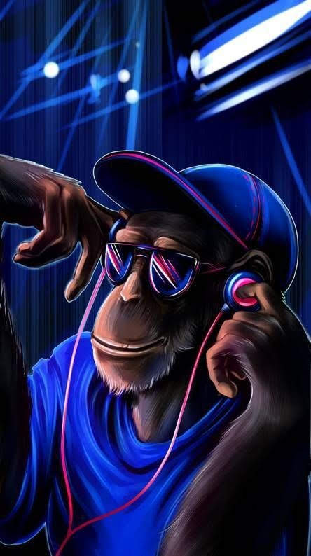
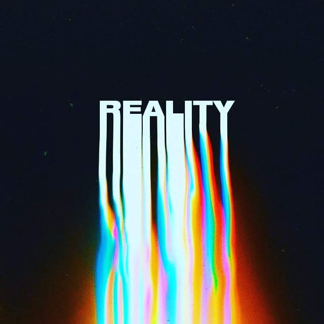
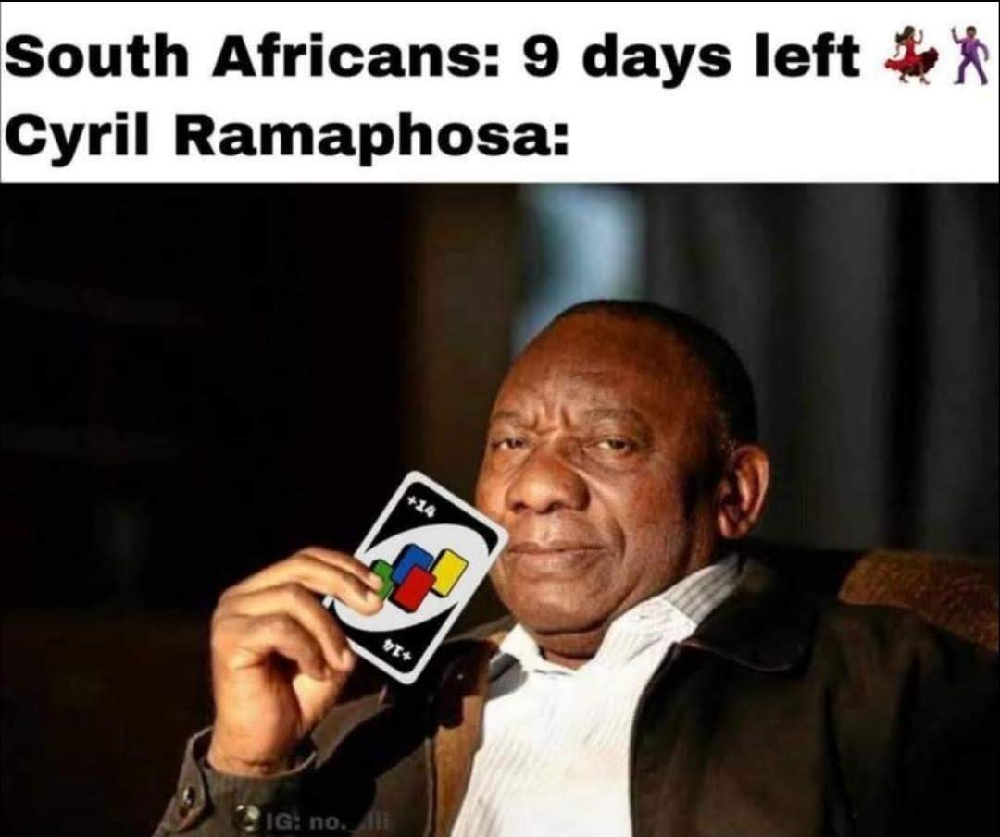
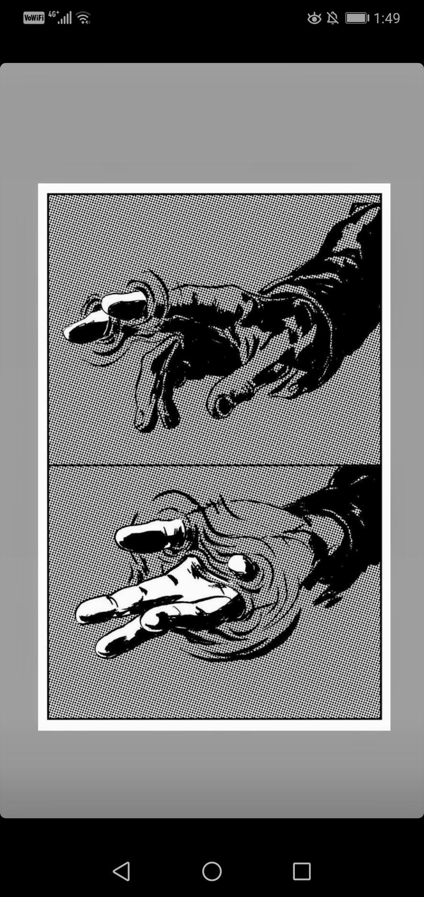

Dylans Blog
About: To all my kings, cousins and bloods out there.
Hi my name is Dylan. I'm an adrenaline junkie, skydiving, bungie jumping, you name it i've done it! i thought i'd start up a blog about my various adventures and screw ups as a record and for other people to read about my many endevours. hope you enjoy!!
Blog One
Wow I actually never thought that I would be doing this, writing isn’t really my strong point but my urge to get my stories out actually excites me a little bit. So here it goes… Hi guys I’m Dylan I think I’m an alcoholic… I’m only joking but let me tell you a little bit about myself. I am a very social creature, I love being around people, chatting to them, dancing, meeting new people and forming friendships is what I excel at. So as you can imagine the Covid-19 lockdown and isolation has changed my life quite a bit. Originally this blog was going to be about wild stories of what happens on a night out (there still will be wild stories) but I have chosen to direct the main focus of this blog on how I have adapted to this situation.

Blog two
Guys its official... i have become a soundcloud rapper out of pure lockdown enduced boredom. Most may take this as a complete joke(even myself sometimes) but i have heard nearly every other song that you could think of and thought why not? it not only a way to keep busy in trying times but is also a great creative outlet, quite similar to this blog page. it is not as easy as people think!! i just spent the past hour trying to make a beat to no avail.
Blog three
And now... the novelty has worn off completely. The reality of this lockdown situation has finally hit its hardest.being stuck inside a dark gloomy house all day can really take its toll and affect ones mood drastically. I am restless and nothing excites me anymore- quite a sad reality dont you think. My roommate and i are currently engaged in a civil war over the last bottle of brandy and a pack of maliboro smokes. he has been ignoring me because he thinks i finished the last ciggarette... which i did but thats not the point.
Blog four
well... there goes all of my post lockdown plans. Oom Ciril decided to hit us hard with a +14 day extention and i dont think that this will be the last of it. i have never felt so much dissapointment. i feel like a criminal mastermind for trying to extract alcohol from handsanitiser... lets just say that it didnt go as planned for me and my roommate. if i have to sit through another zoom meeting for work i think im gonna sell my laptop and say it was stolen. Maybe ill use the money to buy a R250 pack of smokes to get my roommate off my back about smoking that last one. little does he remember about the time that he ate half of my vape flavour to see if it actually tasted like Raspberry apple. looking at the vodocom tower from a far i do really miss freedom and people.
Blog five
As a person that loves being around people and being with people i hold their company and friendship in high regard. but what has happened over the last few days is something that should make all people around the world disapointed. i am talking about the recent murder of George Floyd, it is time for the world to band together to fight against the systemic rasism that has been seen over the years. My heart truely goes out to anyone struggling with opression, this shouldnt be one ethnic groups fight, it should be humanity's.
